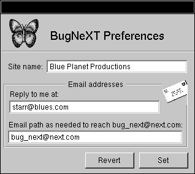
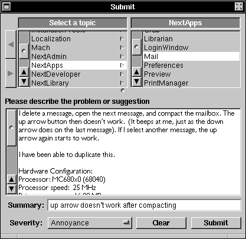
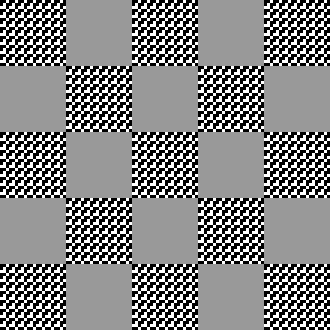

NEXTSTEP In Focus, Spring 1993 (Volume 3, Issue 2).
Copyright ©1993 by NeXT Computer, Inc. All Rights Reserved.
TIPS & TECHNIQUES
GETTING HELP FROM NEXTANSWERS
Want a fast answer to a technical question about NEXTSTEP? Use NeXTanswers, NeXT's new document retrieval system!
NeXTanswers has information on many technical topics, including NEXTSTEP for Intel Processors configuration information, articles from NEXTSTEP In Focus, and more. You can request documents by fax or Internet e-mail--the same documents are available either way. Best of all, the service is free.
Here's how to use it.
Using NeXTanswers by fax
To use NeXTanswers by fax, call the NeXTanswers number--(415) 780-3990--from a touch-tone phone and follow the instructions. You'll be asked for your fax number, a number to identify your fax (like your phone extension or office number), and the ID numbers of the documents you want. When you finish entering the document numbers, hang up and the documents are faxed to you.
To get a list of the available documents, call and request document 1001. Once you receive it, call again to request the documents you want.
Using NeXTanswers by e-mail
To use NeXTanswers by Internet e-mail, send mail to NeXTanswers@next.com.
To request a specific document, include its ID number in the Subject line or body of the message. To get a list of available documents, include the keyword "INDEX" in the Subject line or body. For complete instructions on using NeXTanswers e-mail, include the keyword "HELP."
You can ask for multiple documents in the same request message. The documents are sent as NeXTmail attachments. If you can't receive NeXTmail, include the keyword "ASCII" in the Subject line or body of the message, and the documents will be sent as ASCII text instead.
If you have problems using NeXTanswers, send them to NeXTanswers-request@next.com.
Check it out!
The next time you have a question about using NEXTSTEP, give NeXTanswers a try. And remember to get a new index now and then--we'll be adding new information that might be just what you need.
By the way, where's the old NeXTanswers?
Previously, NeXTanswers was a set of question and answer pairs that covered topics from "What is NEXTSTEP?" to "I got this error message. What's going on?" It has been available at some archive sites and on the support bulletin floppy disk.
When we decided to make documents available by fax and e-mail, we thought the information in NeXTanswers would be perfect to include. Since we liked the name "NeXTanswers," we decided to call the whole document retrieval system that.
Of course, then we had to think of a new name for the question-answer pairs. We're calling them "Questions&Answers," and that's how they're listed in the NeXTanswers index.
BUG BATTLING MADE EASIER
Something's not working, and you know it's not your fault! So, how do you let us know about it?
BugNeXT is a bundled application that makes it easier for you to let us know about problems you find in NeXT products, through e-mail. It gathers information from you on the problem, adds information about your particular system, and mails the information to us. Because the information comes in a standardized form, we can more easily use it to determine what the problem is and go about fixing it. You can set up BugNeXT for many users at your site, and each can then file bug reports individually.
Setting up
BugNeXT is in /NextDeveloper/Demos. It's part of the Demonstrations package of Release 3.1.
You should set up BugNeXT for the users at your site, and make sure that certain settings in BugNeXT's Preferences match for all users. These settings are explained in BugNeXT's Help, but we'll highlight how to use them here.

Be sure to set BugNeXT Preferences.
Site name
You need a site name to help identify your site to our Support team. If we've already given your site a name, continue to use that. Otherwise, you can create a unique name. Everyone at your site should use the same site name for consistency.
E-mail addresses
To use BugNeXT, you must have Internet e-mail access so BugNeXT can send us the messages. By default, BugNeXT sends mail to the address Bug_NeXT@next.com. If you use a gateway to send mail outside your site, modify the e-mail path field in BugNeXT Preferences to indicate the full path or gateway.
You can also supply a return address so that we can request additional information on the bug if we need to. This reply address can be different for each user sending bugs.
Sending in bugs
BugNeXT is simple to use: (1) use the Submit/New menu item to get a Submit window; (2) complete the form; and (3) select Submit to send your report to NeXT. A copy of the report will be sent to you.
For the Topic, make your best guess, being as specific as you can. If you know only the general area of the problem, select something in the left or middle browser column, like "Mach" or "App Support."
In the Description, detail the problem as much as you can. If you can reproduce the problem, give the steps. If you cannot reproduce it, say so. Also list any other factors that could be relevant, such as special fonts, modified hardware, whether the machine is a server (NFS, NetInfo, database, and so on), other applications running at the time of the bug, special daemons, and other situations special to your system. If the problem is causing an attention panel to show on your screen, you can select, copy, and paste the text of the message into your report.
BugNeXT adds a list of your hardware and installed packages in the Description at the bottom, so try to run BugNeXT on the machine on which the problem occurred. If you can't file the report on this machine (for example, if it won't boot), edit the hardware information in the Description to describe the problem machine.

The hardware info helps us fix the problem.
In the Summary, summarize the problem in up to 95 characters. Be as descriptive as you can in that space. Usually you don't need to include the name of the application again, since it's in the Topic. Also, don't include words like "bug," "problem," "minor," or "UI"--we can figure that part out, so you can use the space for other details.
| Bad Summary | Good Summary | |
| Crash in Mail | Crash when scrolling last message in mailbox | |
| UI bug in PB | Save menu item enabled when no document open | |
| Fax bug report | Double-clicking user name should assign fax |
Use the Severity button to indicate how big an impact the problem has on you. If you're not sure what to set this to, you can leave it Unknown.
What we do with your bug report
When your report arrives here at NeXT, we look it over to see whether it's about a new problem or something we already know about. If it's new, the bug is filed in our database and assigned to a Support engineer who specializes in the topic. The engineer lets you know the bug was received, and tries to duplicate the problem and fix it.
Thanks!
We appreciate your sending us information about problems you find--it helps us improve our products and make them more useful to you!
DIVVYING IT UP: HOW TO USE FDISK
If you want to run multiple operating systems on a PC, you need to use NEXTSTEP's fdisk program to divide your disk into partitions. NEXTSTEP fdisk creates up to four partitions, and it's built into the NEXTSTEP installation software so you can partition your disk as you install.
Why a new fdisk?
NEXTSTEP fdisk is very similar to the DOS program fdisk in that you can use either to partition disks. However, NEXTSTEP fdisk has features that make it better to use with NEXTSTEP:
| It can create up to four partitions, rather than DOS fdisk's maximum of two. | ||
| It can change the system boot program so that it asks you to select which operating system--NEXTSTEP or DOS--to use, and boots from the appropriate partition. | ||
| It can create extra large partitions, so that you can use all of the space on a disk. | ||
| It can create a NEXTSTEP partition. |
Installing and fdisk
When you install NEXTSTEP, the installation software gives you a few basic choices for setting up your disk, and it uses fdisk to change the partitioning. Here are the basic configurations you can choose:
| Use the whole disk for NEXTSTEP. In this case, you don't need any partitions. | ||
| Make space for both DOS and NEXTSTEP. For this, fdisk divides the disk into two partitions, one for DOS and one for NEXTSTEP. | ||
| Leave current partitions alone, and use all unallocated space for NEXTSTEP. fdisk creates one new partition with the remaining space and installs NEXTSTEP on it. | ||
| Replace the current DOS extended partition with a NEXTSTEP partition. For this, fdisk changes the function of the partition from extended to NEXTSTEP. |
If you want to partition your disk differently from these options, the installation software gives you the option to run fdisk interactively instead. (You'll still need to create a NEXTSTEP partition.)
Using fdisk
Ordinarily, you might not use fdisk after installation at all. Deleting a partition effectively erases all the files stored therein, so it's not something you'll do often. However, if you need to remove a partition, create a partition, or change the active partition, fdisk has an interactive mode that you can use.
Important: Back up any data you care about before you delete the partition that the data resides on.
Using fdisk's menu
When you run fdisk interactively, it displays information about the current partitions and unallocated disk space, and a menu of what you can do. The information includes the type of data the partitions contain, the starting address of each partition in megabytes, the size of each partition in megabytes, and which is the active partition.
Choose menu items to make changes to the partitions. The changes you make aren't written until you explicitly save them. Once you save them, you need to reboot to see the changes.
Using the non-interactive mode
Rather than using fdisk's menu, you can call it with an inquiry or action to affect partitioning. This is useful for scripts that change partitioning, and is how the installation software uses fdisk. We don't expect many people to create scripts like this; however, if you're interested, the non-interactive mode is explained in the fdisk(8) man page.
Where else to look
For more information on NEXTSTEP fdisk, see the UNIX manual pages for fdisk(8) and disk(8). For information on DOS fdisk, see your DOS documentation.
FLIP/FLOPPING OPERATING SYSTEMS
If you're using NEXTSTEP on a PC and have a DOS partition, you might want to switch between using DOS and NEXTSTEP. Here's how to do it:
DOS to NEXTSTEP
To switch from DOS to NEXTSTEP, you can either reboot and select NEXTSTEP, or you can use the utility gonext. This utility is provided on your Release 3.1 CD-ROM--it's gonext.com in /usr/Dos. To set it up, while you're in NEXTSTEP copy the file to your DOS partition, and make sure that the directory you store it in is listed in your DOS path (set in autoexec.bat). You can then run gonext from the DOS prompt:
C> gonext
This is essentially the same as rebooting using the Reset key or typing CTRL-ALT-DEL. However, it boots NEXTSTEP without waiting for you to choose an operating system.
gonext doesn't try to shut down the system cleanly, so you shouldn't run it anytime you wouldn't feel comfortable hitting the Reset key (such as when you have unsaved documents). Even though Microsoft Windows, for example, disables CTRL-ALT-DEL as a reboot mechanism, it can't disable gonext.
NEXTSTEP to DOS
To switch from NEXTSTEP to DOS, you can run a DOS emulation application, or you can simply log out of NEXTSTEP and reboot in DOS.
PICKING A PC MOUSE
Need to choose a mouse for your NEXTSTEP PC? We've tried a lot of serial mice, and here's what we've found:
| Mouse Name | Our Comments | |
| Amis Serial Mouse | Move the switch at the left side of the mouse to MS. The middle button is disabled. Very light. | |
| Amcer Mouse | Move the switch on the bottom of the mouse to MS-2KEY. The middle button is disabled. | |
| Kensington Expert Mouse Trackball | Large footprint. | |
| Logitech Cordless Mouseman | The middle button is disabled. Adjust the knob on the right side of the receiver to the right channel. Large. | |
| Logitech First Mouse | The middle button is disabled. | |
| Logitech Kidz Mouse | Tiny. | |
| Logitech Left-hand Mouseman | The middle button is disabled. | |
| Logitech Mouseman | The middle button is disabled | |
| Logitech Trackman Combo | The middle button is disabled. Large footprint. | |
| Logitech Trackman Portable | The top button maps to the left NeXT button, and the long button maps to the right NeXT button. The round button is disabled. | |
| Microsoft Serial Mouse | You can use the serial-PS/2 version as well. | |
| MicroSpeed MicroTRAC | The top button maps to the left NeXT button, and the left button maps to the right NeXT button. The right button is for drag lock. Small footprint. | |
| MicroSpeed PC-TRAC | The middle button is for drag lock. Large footprint. | |
| ProHance TrackBall | The middle button is disabled. Large footprint. | |
| QTRONIX Trackball | The middle button is disabled. Large footprint. |
Please keep in mind that NEXTSTEP's serial mouse driver supports mouse types M, V, and W. Mouse type C is not supported.
CALIBRATING YOUR MONITOR
Here's a cheap and easy way to adjust your screen to improve the appearance of images on it, by making sure it fits the assumptions NEXTSTEP makes about display linearity. The monitor must have brightness and contrast controls for this to work.
Three easy steps
Here's what to do:
| 1. | Display an image like the one on the next page on your screen. The image must have tiles whose color is 44% gray, interleaved with patterned tiles whose patterns are made up of 44% white and 55% black pixels. |
| (The image shown here is on the issue's floppy disk, in the file MonitorCalibration.tiff.) | |
| 2. | If you wear glasses, take them off. If not, squint or go stand across the room from your monitor. (This makes the next step a little tricky.) |
| 3. | Adjust the contrast and brightness controls until the image "merges" into a uniformly gray field. At some settings the pure gray tiles should appear brighter than the dithered tiles, while at other settings the dithered tiles should be brighter. You want to find the intermediate setting that merges the two types of tiles the best. |
When the whole image looks like it has a solid color, you're done.
What's going on when you do this?
NEXTSTEP assumes that the display has linear intensity. In other words, it thinks that doubling the gray value of a pixel doubles the amount of energy coming off the screen.
Dithering is the technique of simulating a color by creating a pattern from the right proportion of other color dots. In this example, this means simulating an average shade of gray with black and white patches.
In the image, the dithered areas (those with the pattern) contain 44% white pixels and 55% black pixels, while the constant areas are made of all 44% gray pixels. When these areas appear equally bright, the settings on the monitor are considered linear, and dithering works optimally!
Incidentally, this scheme only provides a very rough brightness and contrast adjustment. To make finer adjustments, you would need to use real color calibration hardware and software.

Calibrate your monitor to make images clearer.